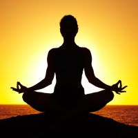
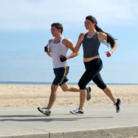
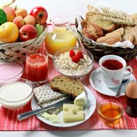

El yoga (del sánscrito ioga) se refiere a una tradicional disciplina física y mental que se originó en la India. La palabra se asocia con prácticas de meditación en el hinduismo, el budismo y el jainismo. Según sus practicantes, el yoga otorga como resultado:
la unión del alma individual con la divinidad (Brahman, Shiva, Visnú, Kali, etc.), entre los que tienen una postura religiosa de tipo devocional;
la percepción de que el yo es espiritual y no material, entre los que tienen una postura espiritualista;
el bienestar físico y mental, entre los que tienen una postura racionalista (atea o agnóstica).

Masajes armonizantes
Tal vez, la palabra energía que emplean en oriente podamos nosotras, occidentales, traducirla como fuerza, o como circulación. La energía del universo y la energía del cuerpo están ligadas, la fuerza se activa para que el organismo alcance su equilibrio: consigo mismo, con el cosmos. En los masajes con cañas de bambú, lo que se pone en marcha es la vida de cada uno de los siete chakras, puntos fundamentales a tratar si se busca armonización completa.
Pero los beneficios de estos masajes no se detienen en lo espiritual, en tanto cuerpo y espíritu se modifican y afectan constantemente. El drenaje linfático es el más notorio de los efectos beneficiosos de esta antigua técnica. Ocurre que de acuerdo a la tradición médica china, las cañas no sólo sirven para modelar el cuerpo y hacer correr la sangre, sino que son conductoras de energía. Por eso, el Feng shui aconseja estas varas naturales para armonizar habitaciones, dormitorios e interiores en general. Volviendo a los masajes, las ventajas pueden sintetizarse en los siguientes puntos;
Deportes al aire libre
Entre los deportes y actividades más destacados que podrás practicar al aire libre, están los siguientes:
-Montar en bici: Las principales ciudades de España, ya cuentan con numerosos kilómetros de carriles bicis que rodean la ciudad. Montar en bici es una forma muy divertida y segura de conocer tu ciudad y poder realizar un deporte en espacios habilitados únicamente para las personas que deseen pasear o correr con su bicicleta, sin molestar a nadie o tener que sortear a la gente que se pone en tu camino. ¡Pedalea hasta que no puedas más!
- Natación: Si vives en la playa, ¡enhorabuena!, podrás dedicar diariamente unos minutos a darte un chapuzón y hacer unos largos por la extensión de la playa. Proponte una meta y realiza varios ejercicios en el agua. Empieza de forma suave y ves aumentando tu ritmo y para finalizar, incluso puedes caminar por la orilla del mar o correr de forma suave por el paseo marítimo.
- Senderismo: Si prefieres la montaña a la playa, no dudes en hacer senderismo, una especialidad del montañismo. El senderismo, busca acercar a las personas a un medio natural a través de elementos etnográficos y culturales tradicionales, utilizando cañadas reales, caminos vecinales y senderos. Constituye el tándem perfecto deporte, cultura y medio ambiente.

Alimentos Naturistas
La alimentación naturista tiende a estar de moda en diferentes países principalmente por una cuestión básica: aporta un buen número de propiedades y beneficios al organismo, y ayuda al correcto y buen funcionamiento de la salud.
Se caracteriza porque los alimentos que únicamente consume la persona que adopta la alimentación naturista es fundamentalmente natural y vegetal, evitando siempre el consumo de alimentos de origen animal (podría decirse que es una alimentación sana en sí misma).
La alimentación naturista, explicado de manera sencilla y simple, viene a consistir en la elección de alimentos esenciales, sobretodo vegetales, rechazándose siempre aquellos que hayan sido cultivados con abonos químicos y/o adulterados.
En este sentido, el naturismo se diferencia de la alimentación macrobiótica en que la primera da una mayor importancia al consumo de verduras y frutas, mientras que la segunda propone como alimento principal los cereales integrales.
